一、自动化部署
1.1 自动化部署
1.2 传统部署
-
由开发人员进行源码的编译、打包
-
通过运维对客户的生产线进行部署
-
使用工具把部署包发送到客户生产线想要位置
-
还需配置生产线的环境
1.3 自动化部署
1.3.1 自动化部署工具
| 工具 |
说明 |
| git |
源代码管理软件，开发的时候需要多人合作，没个人编辑自己的模块，最后要进行合并 |
| Gitee |
Gitee介于GitHub而来的，Gitee源码仓库：可以满足客户端git提交源代码和获取源代码的请求，假设在公有云上的 |
| Gitlab |
Gitlab基本功能和Gitee一样，区别：Gitlab时公司自己架设的源代码管理仓库 |
| Maven |
java的jar包管理，jar包的远程仓库，编译源代码为jar包，就是打包的意思，只要打包后才能部署 |
| JDK |
Java开发和运行环境，Maven的依赖 |
| Nginx |
静态资源服务器，访问静态资源、反向代理和负载均衡 |
| Tomcat |
JAVA应用容器服务器，可以承载java应用，也可以承载jenkins |
| Jenkins |
自动化集成部署工具 |
1.3.2 git 流程图
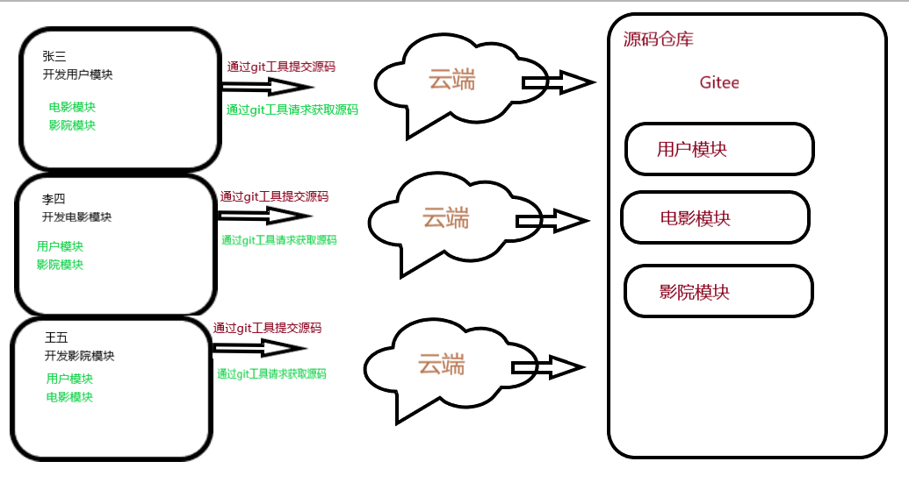
1.3.3 自动化部署流程
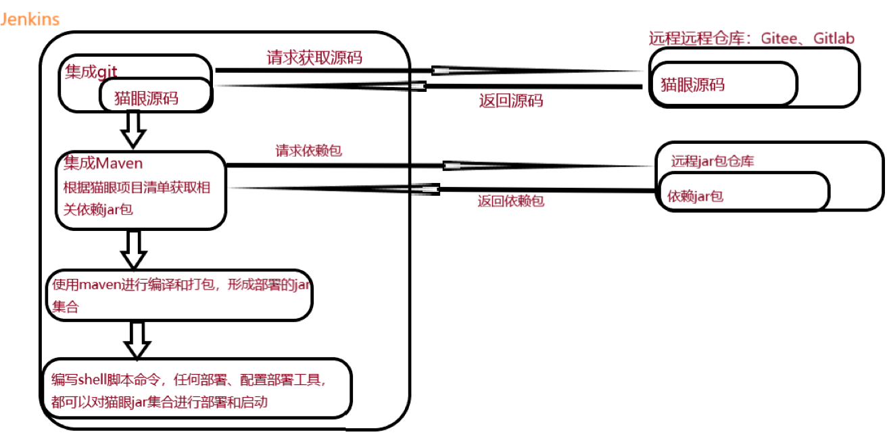
1.3.4 下载git
Git - Downloads (git-scm.com)
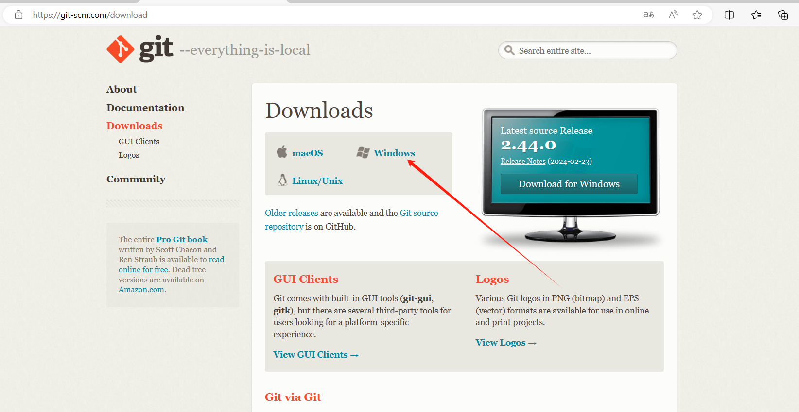
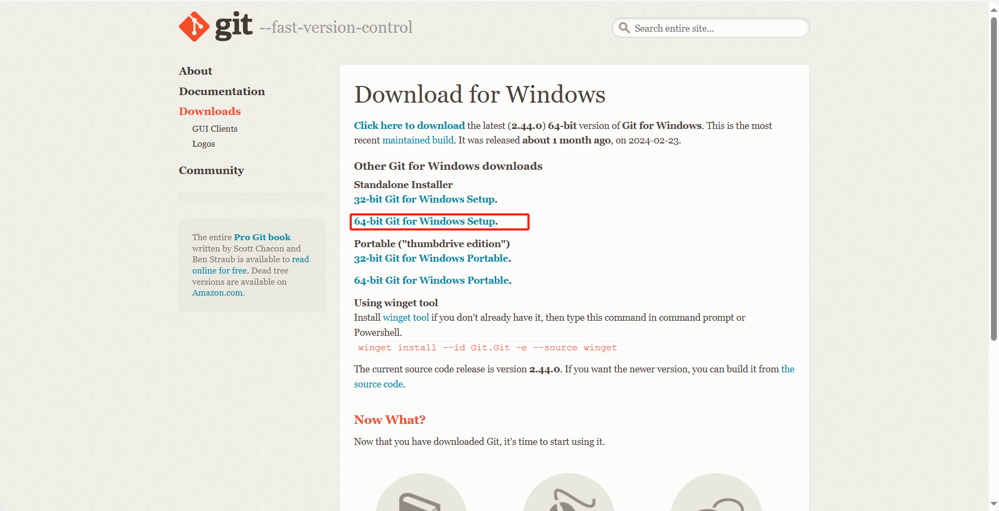
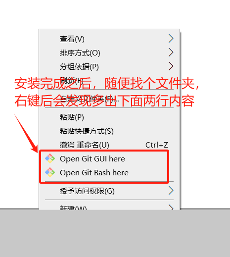
1.3.5 注册Gitee仓库
Gitee - 基于 Git 的代码托管和研发协作平台
二、Git 源代码管理工具
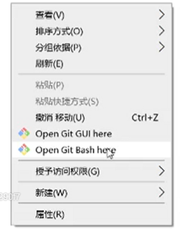
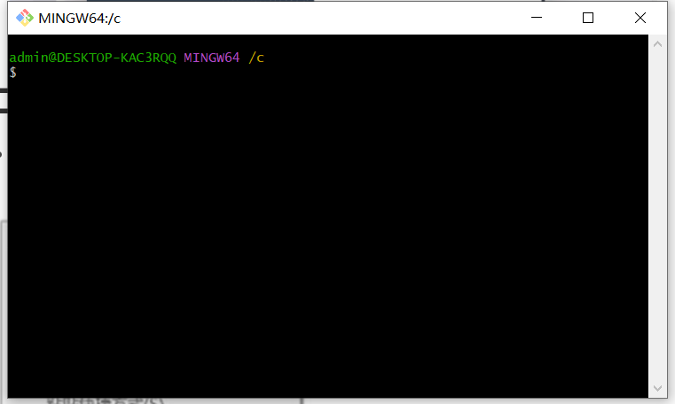
2.1 初始化git
admin@DESKTOP-KAC3RQQ MINGW64 /c
$ mkdir C:/gitdemo #在C盘创建一个gitdemo文件夹
admin@DESKTOP-KAC3RQQ MINGW64 /c
$ cd C:/gitdemo #进入目录
admin@DESKTOP-KAC3RQQ MINGW64 /c/gitdemo
$ git init
Initialized empty Git repository in C:/gitdemo/.git/
admin@DESKTOP-KAC3RQQ MINGW64 /c/gitdemo (master)
初始化完成后，会发现在原本的路径显示上多了一个master，这个是默认创建的分支
以后相关的源代码的管理都在默认分支下运行
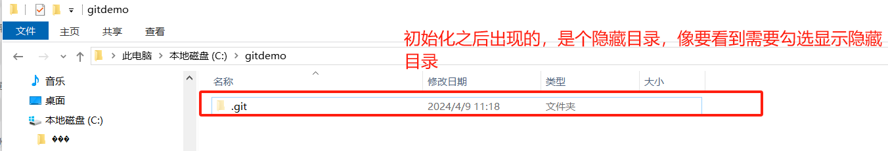
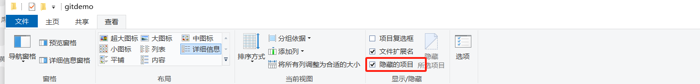
2.2 增加内容
2.2.1 创建文件
admin@DESKTOP-KAC3RQQ MINGW64 /c/gitdemo (master)
$ touch hello
admin@DESKTOP-KAC3RQQ MINGW64 /c/gitdemo (master)
$ echo "这个是我git的测试文件" >> hello
admin@DESKTOP-KAC3RQQ MINGW64 /c/gitdemo (master)
$ cat hello
这个是我git的测试文件
2.2.2 加入到版本库
admin@DESKTOP-KAC3RQQ MINGW64 /c/gitdemo (master)
$ git add hello
warning: in the working copy of 'hello', LF will be replaced by CRLF
the next time Git touches it
git add 本质是脚本目录，对内核git update-index的调用
git update-index --add hello
如果你需要将某一个文件从版本库内移除，也可以使用update-index
git update-index --force-remove hello
2.2.3 commint
admin@DESKTOP-KAC3RQQ MINGW64 /c/gitdemo (master)
$ git status #查询你当前状态
On branch master
No commits yet
Changes to be committed:
(use "git rm --cached <file>..." to unstage)
new file: hello
admin@DESKTOP-KAC3RQQ MINGW64 /c/gitdemo (master)
$ cat hello
这个是我git的测试文件
admin@DESKTOP-KAC3RQQ MINGW64 /c/gitdemo (master)
$ echo "这个是新的数据，来测试文件" >> hello
admin@DESKTOP-KAC3RQQ MINGW64 /c/gitdemo (master)
$ cat hello
这个是我git的测试文件
这个是新的数据，来测试文件
admin@DESKTOP-KAC3RQQ MINGW64 /c/gitdemo (master)
$ git status
On branch master
No commits yet
Changes to be committed:
(use "git rm --cached <file>..." to unstage)
new file: hello
Changes not staged for commit:
(use "git add <file>..." to update what will be committed)
(use "git restore <file>..." to discard changes in working directo
ry)
modified: hello
admin@DESKTOP-KAC3RQQ MINGW64 /c/gitdemo (master)
$ git add .
warning: in the working copy of 'hello', LF will be replaced by CRLF
the next time Git touches it
在提交的时候出现下面的问题，如何解决
admin@DESKTOP-KAC3RQQ MINGW64 /c/gitdemo (master)
$ git commit -m "diff"
Author identity unknown
*** Please tell me who you are.
Run
git config --global user.email "you@example.com"
git config --global user.name "Your Name"
to set your account's default identity.
Omit --global to set the identity only in this repository.
fatal: unable to auto-detect email address (got 'admin@DESKTOP-KAC3R
QQ.(none)')
admin@DESKTOP-KAC3RQQ MINGW64 /c/gitdemo (master)
$ git config --global user.email "111111111@163.com"
admin@DESKTOP-KAC3RQQ MINGW64 /c/gitdemo (master)
$ git config --global user.name "wwh"
admin@DESKTOP-KAC3RQQ MINGW64 /c/gitdemo (master)
$ git commit -m "diff"
[master (root-commit) 3d92d20] diff
1 file changed, 2 insertions(+)
create mode 100644 hello
2.2.4 diff
- git diff命令可以做的效果：比价当前工作目录和版本库中差异
admin@DESKTOP-KAC3RQQ MINGW64 /c/gitdemo (master)
$ cat hello
这个是我git的测试文件
这个是新的数据，来测试文件
admin@DESKTOP-KAC3RQQ MINGW64 /c/gitdemo (master)
$ echo "这个数据，是为了和版本内的数据做对比" >> hello
admin@DESKTOP-KAC3RQQ MINGW64 /c/gitdemo (master)
$ cat hello
这个是我git的测试文件
这个是新的数据，来测试文件
这个数据，是为了和版本内的数据做对比
admin@DESKTOP-KAC3RQQ MINGW64 /c/gitdemo (master)
$ git diff
warning: in the working copy of 'hello', LF will be replaced by CRLF the n
ext time Git touches it
diff --git a/hello b/hello
index ebe65b2..3c23f78 100644
--- a/hello
+++ b/hello
@@ -1,2 +1,3 @@
这个是我git的测试文件
这个是新的数据，来测试文件
+这个数据，是为了和版本内的数据做对比
2.3 管理分支
admin@DESKTOP-KAC3RQQ MINGW64 /c/gitdemo (master)
$ git branch
* master
2.3.1 常见的分支策略
2.3.2 创建分支
- 创建分支时，名字可以自定义的，建议名字是有代表性；工作就可以在分支上开展
admin@DESKTOP-KAC3RQQ MINGW64 /c/gitdemo (master)
$ git branch
* master
saly
2.3.2 切换分支
admin@DESKTOP-KAC3RQQ MINGW64 /c/gitdemo (master)
$ git checkout saly
Switched to branch 'saly'
M hello
admin@DESKTOP-KAC3RQQ MINGW64 /c/gitdemo (saly)
2.3.3 创建分支并切换
admin@DESKTOP-KAC3RQQ MINGW64 /c/gitdemo (saly)
$ git checkout -b salys
Switched to a new branch 'salys'
admin@DESKTOP-KAC3RQQ MINGW64 /c/gitdemo (salys)
$ git branch
master
saly
* salys
2.3.4 删除分支
-
分支在被占用的时候，是不能直接删除的
-
如果需要删除，需先切换到其他分支，在进行删除
admin@DESKTOP-KAC3RQQ MINGW64 /c/gitdemo (salys)
$ git branch
master
saly
* salys
admin@DESKTOP-KAC3RQQ MINGW64 /c/gitdemo (salys)
$ git branch -d saly #删除分支saly
Deleted branch saly (was 3d92d20).
admin@DESKTOP-KAC3RQQ MINGW64 /c/gitdemo (salys)
$ git branch
master
* salys
admin@DESKTOP-KAC3RQQ MINGW64 /c/gitdemo (salys)
$ git branch -d salys #删除分支salys，报错了，因为分支正在被使用
error: Cannot delete branch 'salys' checked out at 'C:/gitdemo'
admin@DESKTOP-KAC3RQQ MINGW64 /c/gitdemo (salys)
$ git checkout master
Switched to branch 'master'
M hello
admin@DESKTOP-KAC3RQQ MINGW64 /c/gitdemo (master)
$ git branch -d salys
Deleted branch salys (was 3d92d20).
admin@DESKTOP-KAC3RQQ MINGW64 /c/gitdemo (master)
$ git branch
* master
2.3.5 分支合并
admin@DESKTOP-KAC3RQQ MINGW64 /c/gitdemo (master)
$ git checkout -b salys
Switched to a new branch 'salys'
admin@DESKTOP-KAC3RQQ MINGW64 /c/gitdemo (salys)
$ git branch
master
* salys
admin@DESKTOP-KAC3RQQ MINGW64 /c/gitdemo (salys)
$ cat hello
这个是我git的测试文件
这个是新的数据，来测试文件
这个数据，是为了和版本内的数据做对比
admin@DESKTOP-KAC3RQQ MINGW64 /c/gitdemo (salys)
$ echo "这个数据是在salys分支添加的新的数据" >> hello
admin@DESKTOP-KAC3RQQ MINGW64 /c/gitdemo (salys)
$ cat hello
这个是我git的测试文件
这个是新的数据，来测试文件
这个数据，是为了和版本内的数据做对比
这个数据是在salys分支添加的新的数据
admin@DESKTOP-KAC3RQQ MINGW64 /c/gitdemo (salys)
$ git add .
warning: in the working copy of 'hello', LF will be replaced by CRLF the n
ext time Git touches it
admin@DESKTOP-KAC3RQQ MINGW64 /c/gitdemo (salys)
$ git status
On branch salys
Changes to be committed:
(use "git restore --staged <file>..." to unstage)
modified: hello
admin@DESKTOP-KAC3RQQ MINGW64 /c/gitdemo (salys)
$ git commit -m "salys分支提交的数据"
[salys 447868b] salys分支提交的数据
1 file changed, 2 insertions(+)
admin@DESKTOP-KAC3RQQ MINGW64 /c/gitdemo (salys)
$ cat hello
这个是我git的测试文件
这个是新的数据，来测试文件
这个数据，是为了和版本内的数据做对比
这个数据是在salys分支添加的新的数据
admin@DESKTOP-KAC3RQQ MINGW64 /c/gitdemo (salys)
$ git checkout master
Switched to branch 'master'
admin@DESKTOP-KAC3RQQ MINGW64 /c/gitdemo (master)
$ cat hello
这个是我git的测试文件
这个是新的数据，来测试文件
admin@DESKTOP-KAC3RQQ MINGW64 /c/gitdemo (master)
$ echo "这个是master分支提交的数据" >> hello
admin@DESKTOP-KAC3RQQ MINGW64 /c/gitdemo (master)
$ cat hello
这个是我git的测试文件
这个是新的数据，来测试文件
这个是master分支提交的数据
admin@DESKTOP-KAC3RQQ MINGW64 /c/gitdemo (master)
$ git add .
warning: in the working copy of 'hello', LF will be replaced by CRLF the n
ext time Git touches it
admin@DESKTOP-KAC3RQQ MINGW64 /c/gitdemo (master)
$ git commit -m "master分支的修改"
[master 9e1c332] master分支的修改
1 file changed, 1 insertion(+)
admin@DESKTOP-KAC3RQQ MINGW64 /c/gitdemo (master)
$ git show-branch
* [master] master分支的修改
! [salys] salys分支提交的数据
--
* [master] master分支的修改
+ [salys] salys分支提交的数据
*+ [master^] diff
admin@DESKTOP-KAC3RQQ MINGW64 /c/gitdemo (master)
$ git merge -m "合并salys分支的内容" salys
Auto-merging hello
CONFLICT (content): Merge conflict in hello
Automatic merge failed; fix conflicts and then commit the result.
合并分支报错：
因为两个分支同时修改了文件，并且都做了提交，导致文件内容不一致，这个时候合并，会出现不知道覆盖谁的
2.3.6 解决合并分支的冲突问题
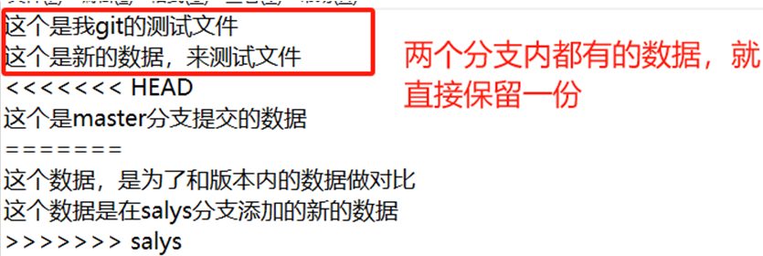
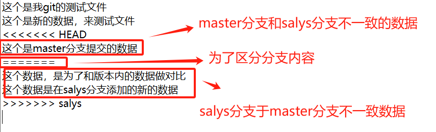
#hello文件打开后的内容
这个是我git的测试文件
这个是新的数据，来测试文件
<<<<<<< HEAD
这个是master分支提交的数据
=======
这个数据，是为了和版本内的数据做对比
这个数据是在salys分支添加的新的数据
>>>>>>> salys
这个是我git的测试文件
这个是新的数据，来测试文件
这个是master分支提交的数据
这个数据，是为了和版本内的数据做对比
这个数据是在salys分支添加的新的数据
- 如果分支内容冲突的时候，单独保留master分支的数据
这个是我git的测试文件
这个是新的数据，来测试文件
这个是master分支提交的数据
admin@DESKTOP-KAC3RQQ MINGW64 /c/gitdemo (master|MERGING)
$ git add hello
admin@DESKTOP-KAC3RQQ MINGW64 /c/gitdemo (master|MERGING)
$ git commit -m "这个是解决了合并分支问题的"
[master b7286cf] 这个是解决了合并分支问题的
admin@DESKTOP-KAC3RQQ MINGW64 /c/gitdemo (master)
$ cat hello
这个是我git的测试文件
这个是新的数据，来测试文件
这个是master分支提交的数据
这个数据，是为了和版本内的数据做对比
这个数据是在salys分支添加的新的数据
admin@DESKTOP-KAC3RQQ MINGW64 /c/gitdemo (master)
$ git log
commit b7286cfe98d1378ed3c1eeeb49de7051c7d674b8 (HEAD -> master)
Merge: 9e1c332 447868b
Author: wwh <111111111@163.com>
Date: Tue Apr 9 15:17:48 2024 +0800
这个是解决了合并分支问题的
commit 9e1c332bf544c5936bc47ececfcbcbb295d3702c
Author: wwh <111111111@163.com>
Date: Tue Apr 9 14:28:05 2024 +0800
master分支的修改
commit 447868b271edb9da5b547b9b2218792813510436 (salys)
Author: wwh <111111111@163.com>
Date: Tue Apr 9 14:22:48 2024 +0800
salys分支提交的数据
commit 3d92d2063439bb2b2cf65b79e36cd84806d36cd6
Author: wwh <111111111@163.com>
Date: Tue Apr 9 13:48:17 2024 +0800
diff
三、Gitee的使用
3.1 创建仓库
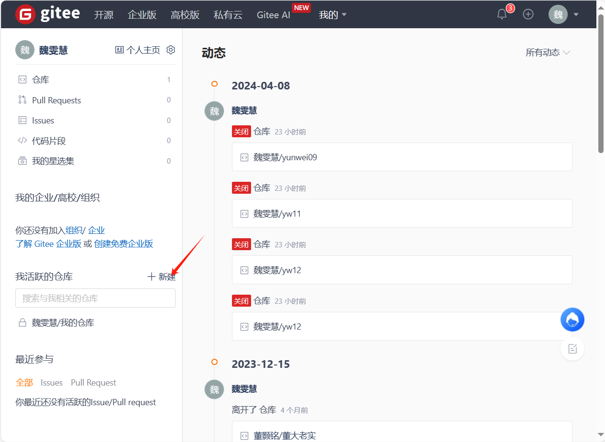
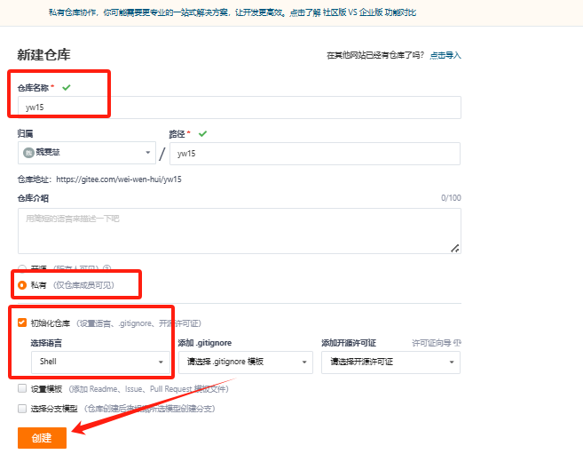
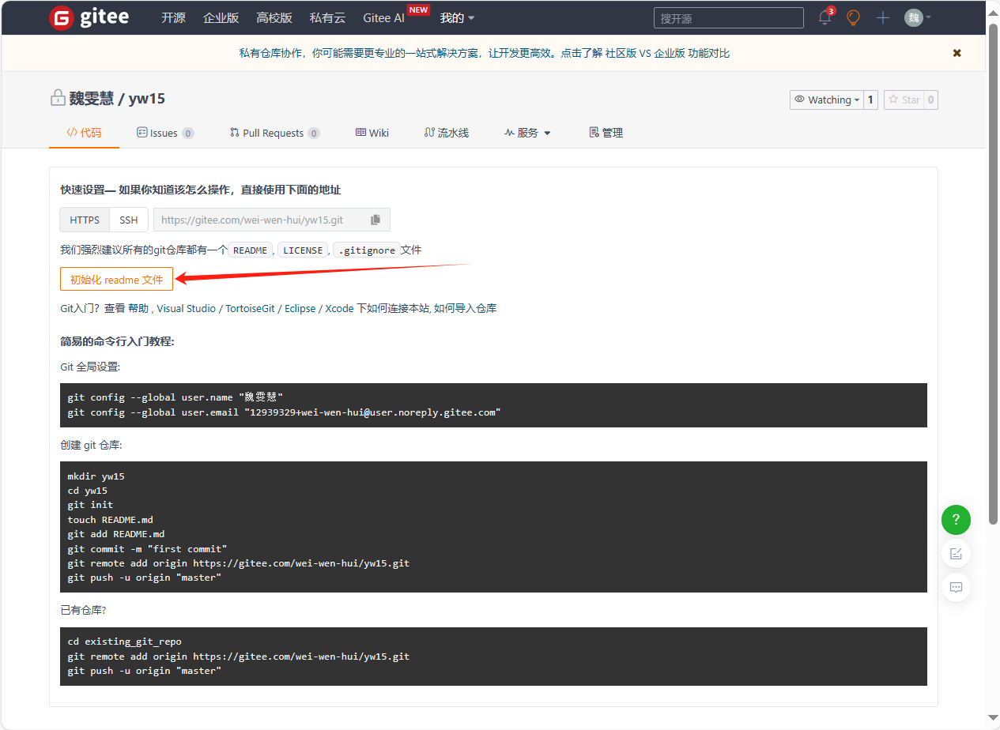
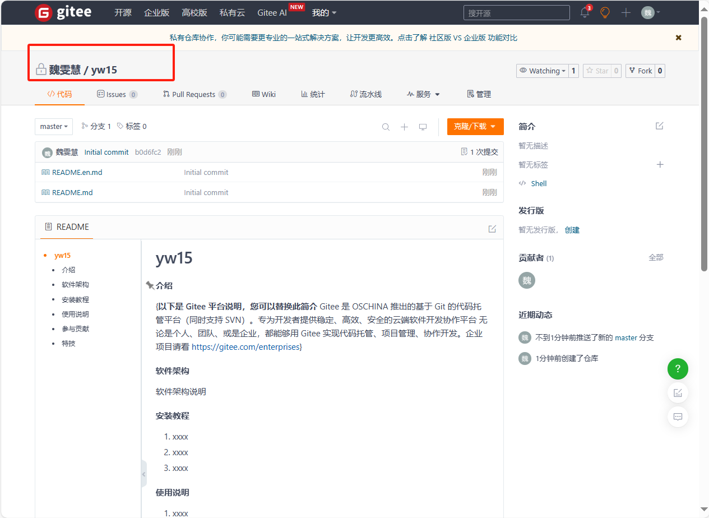
3.2 密钥文件管理
$ git config --list --show-origin
………
file:C:/Users/admin/.gitconfig user.email=111111111@163.com
file:C:/Users/admin/.gitconfig user.name=wwh
……
admin@DESKTOP-KAC3RQQ MINGW64 /c/gitdemo (master)
$ ssh-keygen -t rsa -C "111111111@163.com"
`下面的一直回车就行`
Generating public/private rsa key pair.
Enter file in which to save the key (/c/Users/admin/.ssh/id_rsa):
Created directory '/c/Users/admin/.ssh'.
Enter passphrase (empty for no passphrase):
Enter same passphrase again:
Your identification has been saved in /c/Users/admin/.ssh/id_rsa
Your public key has been saved in /c/Users/admin/.ssh/id_rsa.pub
The key fingerprint is:
SHA256:CMJHw5qriWeBgDG/8/6uBFUR6m5ojPKLB4J8mHeNfBU 111111111@163.com
The key's randomart image is:
+---[RSA 3072]----+
| .o +o |
|o. ..+ E |
|.+oo= . |
|o += . . . |
|+.+oo + S |
|=*=* + o |
|=+*+= . |
|=++o. |
|.+ooo+o |
+----[SHA256]-----+
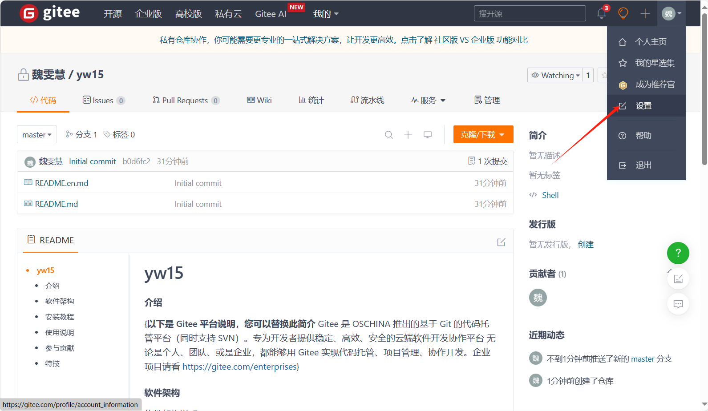
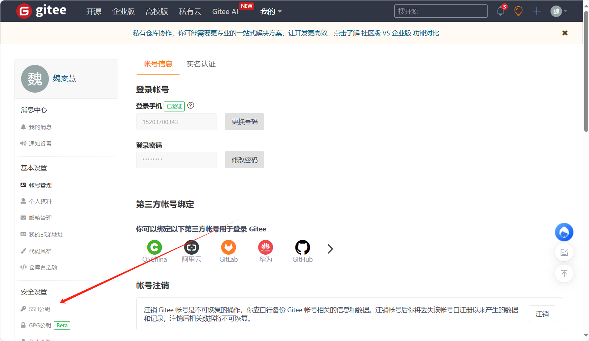
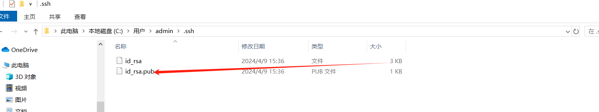
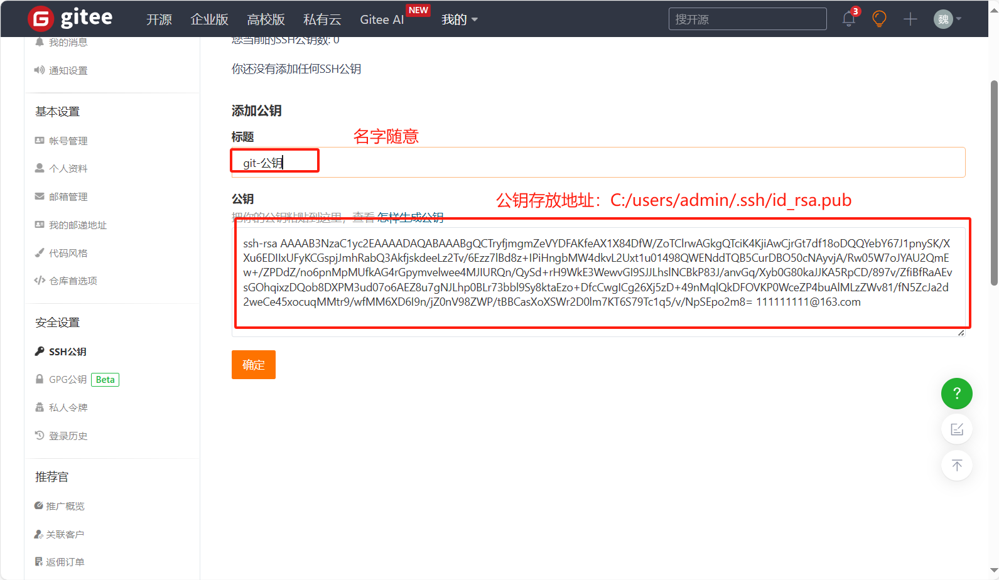
3.3 连接远程仓库
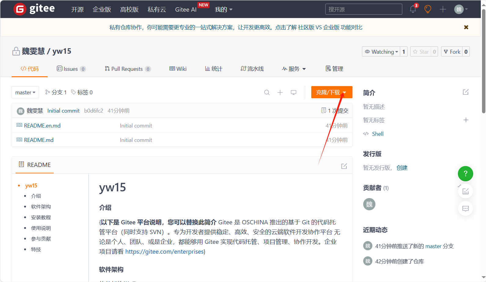
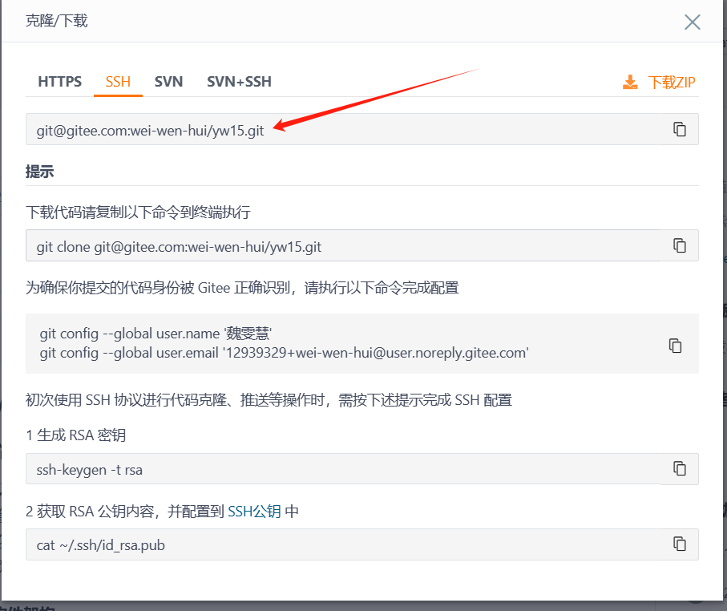
`将远程仓库添加到本地`
admin@DESKTOP-KAC3RQQ MINGW64 /c/gitdemo (master)
$ git remote add origin git@gitee.com:wei-wen-hui/yw15.git
`查询连接的远程仓库`
admin@DESKTOP-KAC3RQQ MINGW64 /c/gitdemo (master)
$ git remote -v
origin git@gitee.com:wei-wen-hui/yw15.git (fetch)
origin git@gitee.com:wei-wen-hui/yw15.git (push)
3.4 远程仓库管理
3.4.1 从远程仓库拉取数据
git pull origin master
- 拉取时本地和远程仓库版本不一致，导致拉取失败和解决方案
admin@DESKTOP-KAC3RQQ MINGW64 /c/gitdemo (master)
$ git pull origin master
From gitee.com:wei-wen-hui/yw15
* branch master -> FETCH_HEAD
fatal: refusing to merge unrelated histories
解决方案
admin@DESKTOP-KAC3RQQ MINGW64 /c/gitdemo (master)
$ git pull origin master --allow-unrelated-histories
From gitee.com:wei-wen-hui/yw15
* branch master -> FETCH_HEAD
Merge made by the 'ort' strategy.
README.en.md | 36 ++++++++++++++++++++++++++++++++++++
README.md | 39 +++++++++++++++++++++++++++++++++++++++
2 files changed, 75 insertions(+)
create mode 100644 README.en.md
create mode 100644 README.md
admin@DESKTOP-KAC3RQQ MINGW64 /c/gitdemo (master)
$ ls
README.en.md README.md hello
3.4.2 向远程仓库推送数据
admin@DESKTOP-KAC3RQQ MINGW64 /c/gitdemo (master)
$ git push -u origin master
Enumerating objects: 15, done.
Counting objects: 100% (15/15), done.
Delta compression using up to 8 threads
Compressing objects: 100% (10/10), done.
Writing objects: 100% (14/14), 1.35 KiB | 1.35 MiB/s, done.
Total 14 (delta 3), reused 0 (delta 0), pack-reused 0
remote: Powered by GITEE.COM [GNK-6.4]
To gitee.com:wei-wen-hui/yw15.git
b0d6fc2..ad6ff5e master -> master
branch 'master' set up to track 'origin/master'.
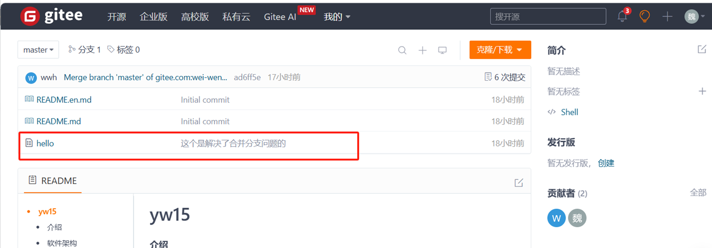
3.4.3 在远程仓库创建分支
方法一：
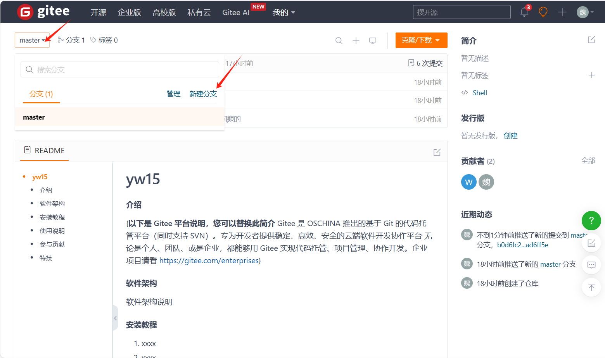
方法二：
admin@DESKTOP-KAC3RQQ MINGW64 /c/gitdemo (master)
$ git branch wwh
admin@DESKTOP-KAC3RQQ MINGW64 /c/gitdemo (master)
$ git branch
* master
salys
wwh
admin@DESKTOP-KAC3RQQ MINGW64 /c/gitdemo (master)
$ git checkout wwh
Switched to branch 'wwh'
admin@DESKTOP-KAC3RQQ MINGW64 /c/gitdemo (wwh)
$ echo "这个是我新创建wwh分支" >> w.txt
admin@DESKTOP-KAC3RQQ MINGW64 /c/gitdemo (wwh)
$ git add .
warning: in the working copy of 'w.txt', LF will be replaced by CRLF the next t
ime Git touches it
admin@DESKTOP-KAC3RQQ MINGW64 /c/gitdemo (wwh)
$ git commit -m "wwh分支推送的文件"
[wwh 5f39f1a] wwh分支推送的文件
1 file changed, 1 insertion(+)
create mode 100644 w.txt
admin@DESKTOP-KAC3RQQ MINGW64 /c/gitdemo (wwh)
$ git push origin wwh
Enumerating objects: 4, done.
Counting objects: 100% (4/4), done.
Delta compression using up to 8 threads
Compressing objects: 100% (2/2), done.
Writing objects: 100% (3/3), 318 bytes | 318.00 KiB/s, done.
Total 3 (delta 1), reused 0 (delta 0), pack-reused 0
remote: Powered by GITEE.COM [GNK-6.4]
remote: Create a pull request for 'wwh' on Gitee by visiting:
remote: https://gitee.com/wei-wen-hui/yw15/pull/new/wei-wen-hui:wwh...wei-w
en-hui:master
To gitee.com:wei-wen-hui/yw15.git
* [new branch] wwh -> wwh
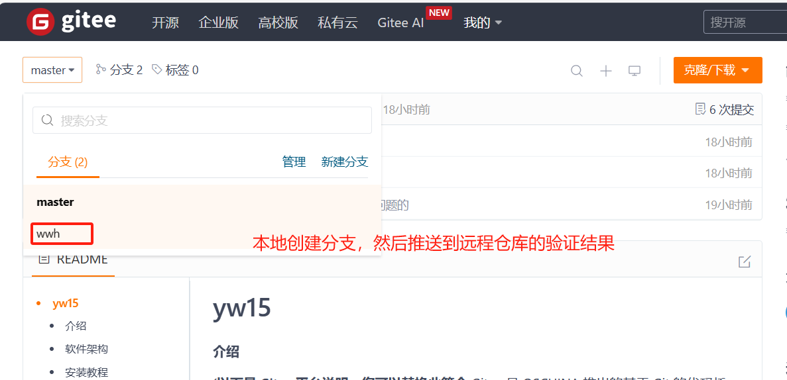
3.4.5 克隆分支到本地
admin@DESKTOP-KAC3RQQ MINGW64 /c
$ git clone -b wwh git@gitee.com:wei-wen-hui/yw15.git
Cloning into 'yw15'...
remote: Enumerating objects: 21, done.
remote: Counting objects: 100% (21/21), done.
remote: Compressing objects: 100% (16/16), done.
remote: Total 21 (delta 5), reused 0 (delta 0), pack-reused 0
Receiving objects: 100% (21/21), done.
Resolving deltas: 100% (5/5), done.
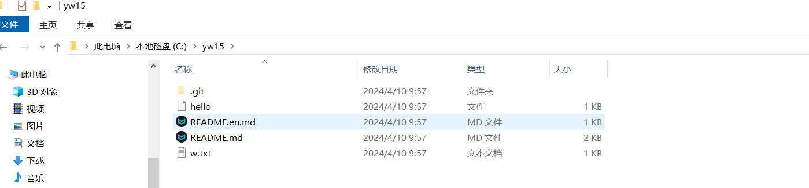
3.5 成员管理
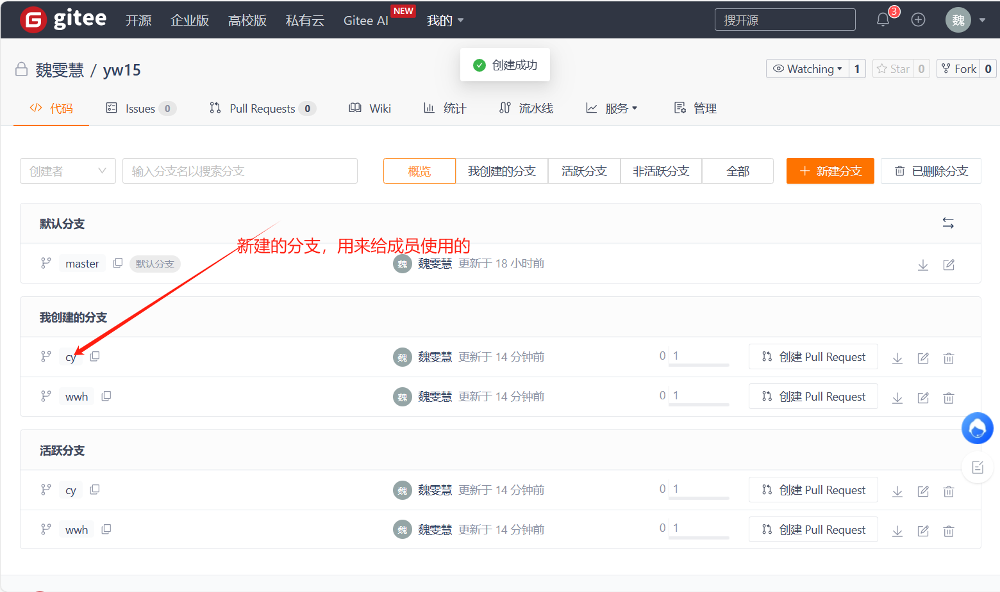
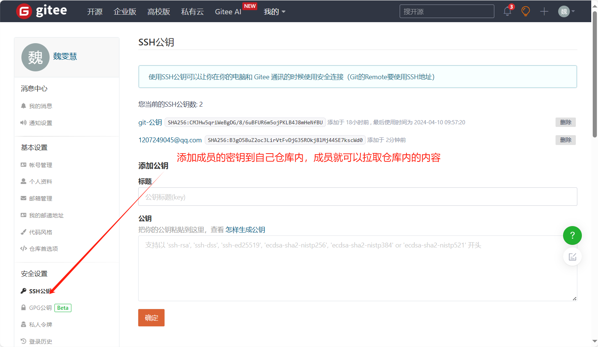
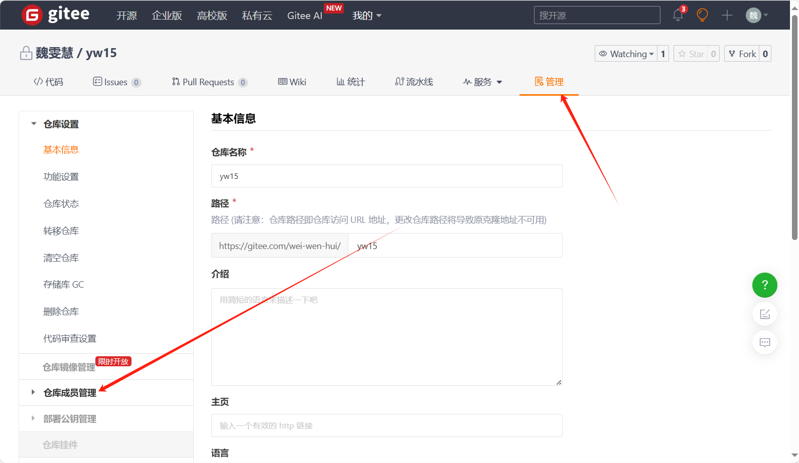
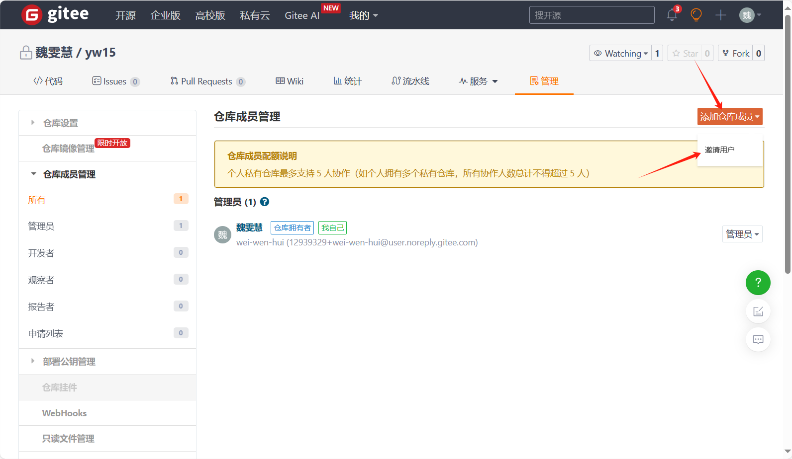
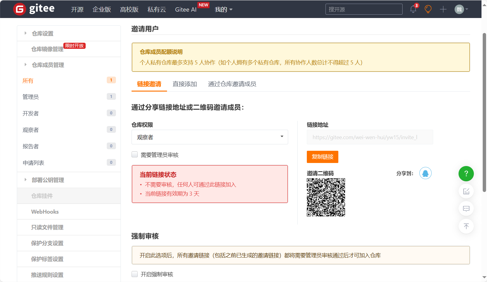
3.6 合并分支
admin@DESKTOP-KAC3RQQ MINGW64 /c
$ cd gitdemo/
admin@DESKTOP-KAC3RQQ MINGW64 /c/gitdemo (wwh)
$ git checkout master
Switched to branch 'master'
Your branch is up to date with 'origin/master'.
admin@DESKTOP-KAC3RQQ MINGW64 /c/gitdemo (master)
$ git pull . wwh
From .
* branch wwh -> FETCH_HEAD
Updating ad6ff5e..5f39f1a
Fast-forward
w.txt | 1 + `增加了一个文件`
1 file changed, 1 insertion(+)
create mode 100644 w.txt
admin@DESKTOP-KAC3RQQ MINGW64 /c/gitdemo (master)
$ git push
Total 0 (delta 0), reused 0 (delta 0), pack-reused 0
remote: Powered by GITEE.COM [GNK-6.4]
To gitee.com:wei-wen-hui/yw15.git
ad6ff5e..5f39f1a master -> master
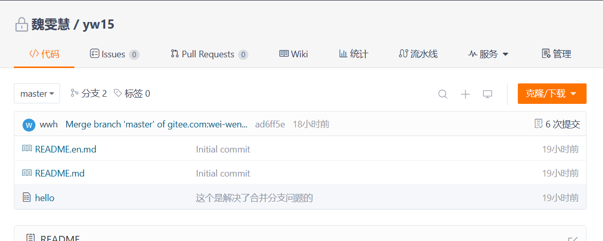
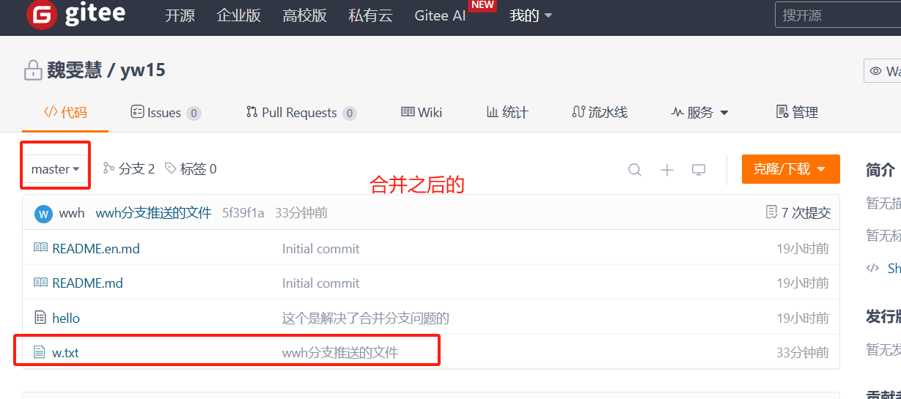
四、linux 部署 Git
4.1 安装git
[root@localhost opt]# yum -y install gcc zlib-devel perl-ExtUtils-MakeMaker package
[root@localhost ~]# yum -y install wget
[root@localhost ~]#
wget https://mirrors.edge.kernel.org/pub/software/scm/git/git-2.18.0.tar.gz
[root@localhost ~]# mv git-2.18.0.tar.gz /opt/
[root@localhost opt]# tar zxf git-2.18.0.tar.gz
#配置并且指定安装目录
[root@localhost opt]# cd git-2.18.0
[root@localhost git-2.18.0]# ./configure --prefix=/usr/local/git
#编译
[root@localhost git-2.18.0]# make
#安装
[root@localhost git-2.18.0]# make install
[root@localhost git-2.18.0]# ls /usr/local/git/
bin libexec share
[root@localhost git-2.18.0]# vim /etc/profile
export GIT_HOME=$PATH:/usr/local/git
export PATH=$PATH:$GIT_HOME/bin
[root@localhost git-2.18.0]# source /etc/profile
[root@localhost git-2.18.0]# git version
git version 2.18.0
4.2 管理Git
[root@localhost opt]# mkdir gitdemo
[root@localhost opt]# cd gitdemo/
[root@localhost gitdemo]# git init
已初始化空的 Git 仓库于 /opt/gitdemo/.git/
[root@localhost gitdemo]# ll
总用量 0
[root@localhost gitdemo]# ls -a
. .. .git
[root@localhost gitdemo]# git remote add origin git@gitee.com:wei-wen-hui/yw15.git
[root@localhost gitdemo]# git remote -v
origin git@gitee.com:wei-wen-hui/yw15.git (fetch)
origin git@gitee.com:wei-wen-hui/yw15.git (push)
[root@localhost gitdemo]# git config --global user.email "111111111@163.com"
[root@localhost gitdemo]# git config --global user.name "wwh"
[root@localhost gitdemo]# ssh-keygen -t rsa -C "111111111@163.com"
Generating public/private rsa key pair.
Enter file in which to save the key (/root/.ssh/id_rsa):
Created directory '/root/.ssh'.
Enter passphrase (empty for no passphrase):
Enter same passphrase again:
Your identification has been saved in /root/.ssh/id_rsa.
Your public key has been saved in /root/.ssh/id_rsa.pub.
The key fingerprint is:
SHA256:vSx356Jy8tBYyNeqmBS9F5sXQTPbrekE+1E9iR96DIA 111111111@163.com
The key's randomart image is:
+---[RSA 2048]----+
| ..+ |
| E ..=..o|
| +o.++|
| o o . +=+o|
| . S = +.=+ |
| . B * =.. |
| . = X o + |
| . oo*.o.o |
| o .=o. .. |
+----[SHA256]-----+
[root@localhost gitdemo]# cat /root/.ssh/id_rsa.pub
ssh-rsa AAAAB3NzaC1yc2EAAAADAQABAAABAQDHsRXEBJn0GcPyeefFXhhBB2UMMt3piSqneHbm/Qu4TXg2+JGEQX7FrOhp+qV2zBPMRraXV2VqudZaUKd1uLdMvZRythCG7KMlokuXmiLIhcbrcsCG/IawNBJPYwC2cJ+4QL6vwhjWhblEAonOu5i2ADpOK98y8un0VYr9SbGb90GQ/9F7CcF+1EgMUvq+r0hxkvPXVjRBsXwsSgJQRuQnOcjWYmO0Bt5PMewcoj6153Szc5RVXU+na4LZvgDlvLgyDI6BT6h+ddvBvbOoqtv4Z73Qf3/wFnGIE0+dwc4CInoVvOAVcYgCB9ORU8wQtNyBGiwlIfMi/1yTHPF41La/ 111111111@163.com
[root@localhost gitdemo]# git pull origin master
The authenticity of host 'gitee.com (180.76.198.77)' can't be established.
ECDSA key fingerprint is SHA256:FQGC9Kn/eye1W8icdBgrQp+KkGYoFgbVr17bmjey0Wc.
ECDSA key fingerprint is MD5:27:e5:d3:f7:2a:9e:eb:6c:93:cd:1f:c1:47:a3:54:b1.
Are you sure you want to continue connecting (yes/no)? yesxiak
Warning: Permanently added 'gitee.com,180.76.198.77' (ECDSA) to the list of known hosts.
remote: Enumerating objects: 21, done.
remote: Counting objects: 100% (21/21), done.
remote: Compressing objects: 100% (16/16), done.
remote: Total 21 (delta 5), reused 0 (delta 0), pack-reused 0
展开对象中: 100% (21/21), 完成.
来自 gitee.com:wei-wen-hui/yw15
* branch master -> FETCH_HEAD
* [新分支] master -> origin/master
[root@localhost gitdemo]# ls
hello README.en.md README.md w.txt
五、Gitlab的搭建
5.1 安装Gitlab
[root@localhost gitdemo]# yum -y install curl policycoreutils-python openssh-server
[root@localhost gitdemo]# yum -y install postfix
[root@localhost opt]# rpm -i gitlab-ce-14.9.5-ce.0.el7.x86_64.rpm
警告：gitlab-ce-14.9.5-ce.0.el7.x86_64.rpm: 头V4 RSA/SHA1 Signature, 密钥 ID f27eab47: NOKEY
It looks like GitLab has not been configured yet; skipping the upgrade script.
*. *.
*** ***
***** *****
.****** *******
******** ********
,,,,,,,,,***********,,,,,,,,,
,,,,,,,,,,,*********,,,,,,,,,,,
.,,,,,,,,,,,*******,,,,,,,,,,,,
,,,,,,,,,*****,,,,,,,,,.
,,,,,,,****,,,,,,
.,,,***,,,,
,*,.
_______ __ __ __
/ ____(_) /_/ / ____ _/ /_
/ / __/ / __/ / / __ `/ __ \
/ /_/ / / /_/ /___/ /_/ / /_/ /
\____/_/\__/_____/\__,_/_.___/
Thank you for installing GitLab!
GitLab was unable to detect a valid hostname for your instance.
Please configure a URL for your GitLab instance by setting `external_url`
configuration in /etc/gitlab/gitlab.rb file.
Then, you can start your GitLab instance by running the following command:
sudo gitlab-ctl reconfigure
For a comprehensive list of configuration options please see the Omnibus GitLab readme
https://gitlab.com/gitlab-org/omnibus-gitlab/blob/master/README.md
Help us improve the installation experience, let us know how we did with a 1 minute survey:
https://gitlab.fra1.qualtrics.com/jfe/form/SV_6kVqZANThUQ1bZb?installation=omnibus&release=14-9
[root@localhost opt]# setenforce 0
setenforce: SELinux is disabled
[root@localhost opt]# systemctl stop firewalld
5.2 修改配置文件
[root@localhost opt]# cp /etc/gitlab/gitlab.rb{,.bak}
[root@localhost opt]# vim /etc/gitlab/gitlab.rb
#32行
#设定gitlab仓库的访问地址，设置端口的时候给大一点，防止冲突
external_url 'http://192.168.10.128:9999'
5.3 初始化Gitlab
[root@localhost opt]# gitlab-ctl reconfigure
5.4 重启gitlab
[root@localhost opt]# gitlab-ctl restart
ok: run: alertmanager: (pid 103195) 0s
ok: run: gitaly: (pid 103213) 0s
ok: run: gitlab-exporter: (pid 103235) 0s
ok: run: gitlab-kas: (pid 103243) 1s
ok: run: gitlab-workhorse: (pid 103252) 0s
ok: run: grafana: (pid 103261) 0s
ok: run: logrotate: (pid 103282) 1s
ok: run: nginx: (pid 103291) 0s
ok: run: node-exporter: (pid 103305) 1s
ok: run: postgres-exporter: (pid 103312) 0s
ok: run: postgresql: (pid 103323) 1s
ok: run: prometheus: (pid 103338) 0s
ok: run: puma: (pid 103451) 0s
ok: run: redis: (pid 103462) 0s
ok: run: redis-exporter: (pid 103468) 1s
ok: run: sidekiq: (pid 103501) 0s
5.5 访问gitlab
http://192.168.10.128:9999
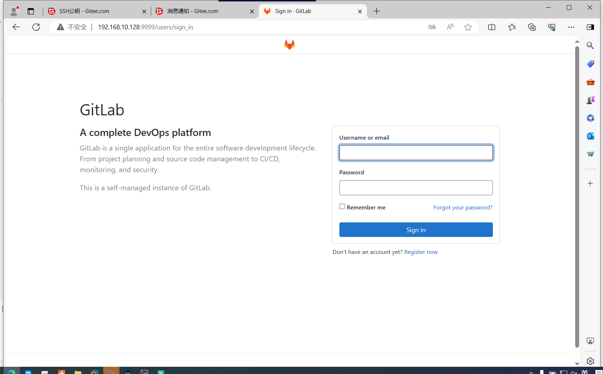
[root@localhost ~]# cat /etc/gitlab/initial_root_password
#### WARNING: This value is valid only in the following conditions
#### 1. If provided manually (either via `GITLAB_ROOT_PASSWORD` environment variable or via `gitlab_rails['initial_root_password']` setting in `gitlab.rb`, it was provided before database was seeded for the first time (usually, the first reconfigure run).
#### 2. Password hasn't been changed manually, either via UI or via command line.
#### # If the password shown here doesn't work, you must reset the admin password following https://docs.gitlab.com/ee/security/reset_user_password.html#reset-your-root-password.
Password: 7YxGIsyfSJiT5dBf8hR0aMONWN2YyCXl66id63ufR5E=
#### NOTE: This file will be automatically deleted in the first reconfigure run after 24 hours.
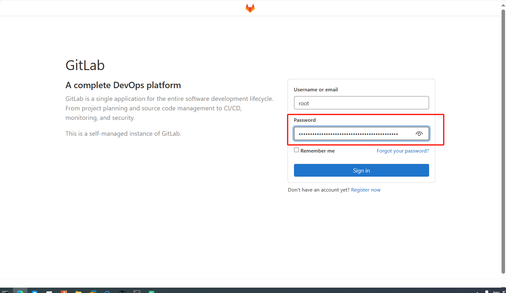
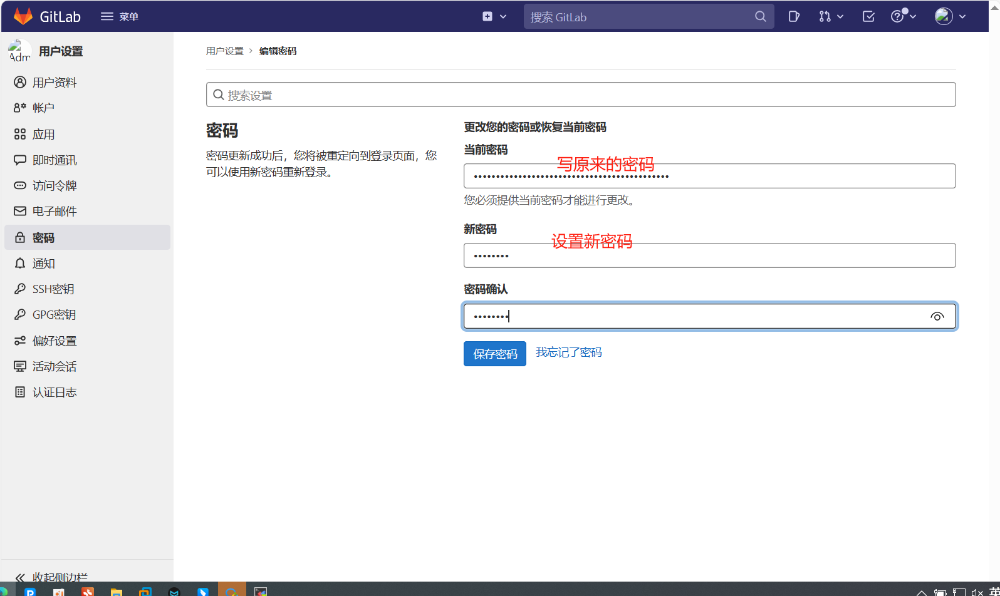
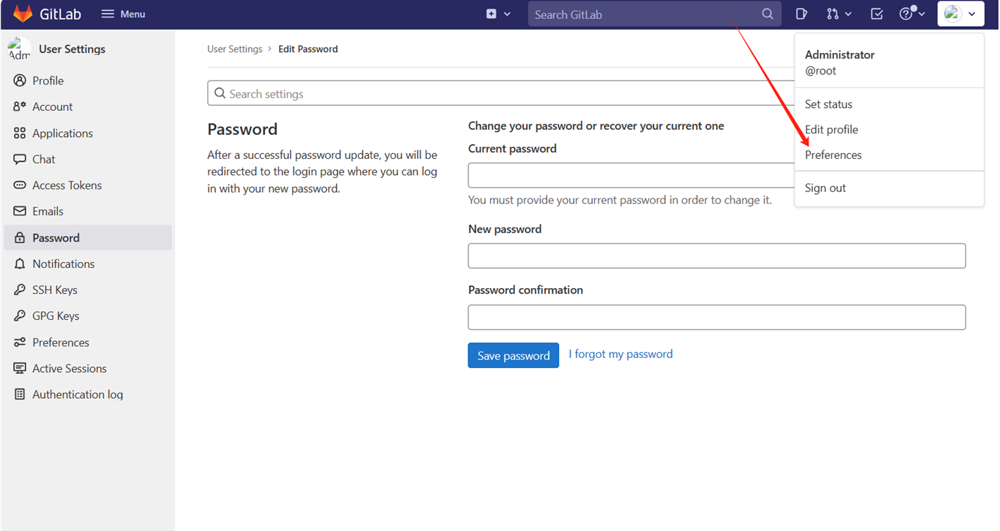
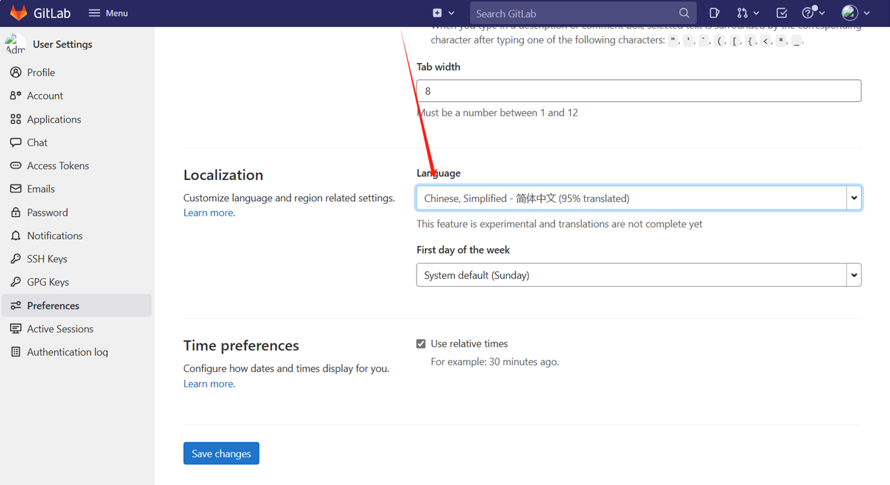
5.6 上传公钥到Gitlab仓库
[root@localhost ~]# cat /root/.ssh/id_rsa.pub
ssh-rsa AAAAB3NzaC1yc2EAAAADAQABAAABAQDHsRXEBJn0GcPyeefFXhhBB2UMMt3piSqneHbm/Qu4TXg2+JGEQX7FrOhp+qV2zBPMRraXV2VqudZaUKd1uLdMvZRythCG7KMlokuXmiLIhcbrcsCG/IawNBJPYwC2cJ+4QL6vwhjWhblEAonOu5i2ADpOK98y8un0VYr9SbGb90GQ/9F7CcF+1EgMUvq+r0hxkvPXVjRBsXwsSgJQRuQnOcjWYmO0Bt5PMewcoj6153Szc5RVXU+na4LZvgDlvLgyDI6BT6h+ddvBvbOoqtv4Z73Qf3/wFnGIE0+dwc4CInoVvOAVcYgCB9ORU8wQtNyBGiwlIfMi/1yTHPF41La/ 111111111@163.com
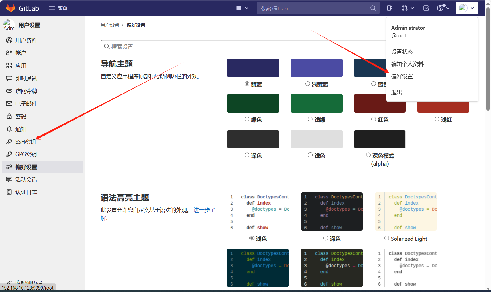
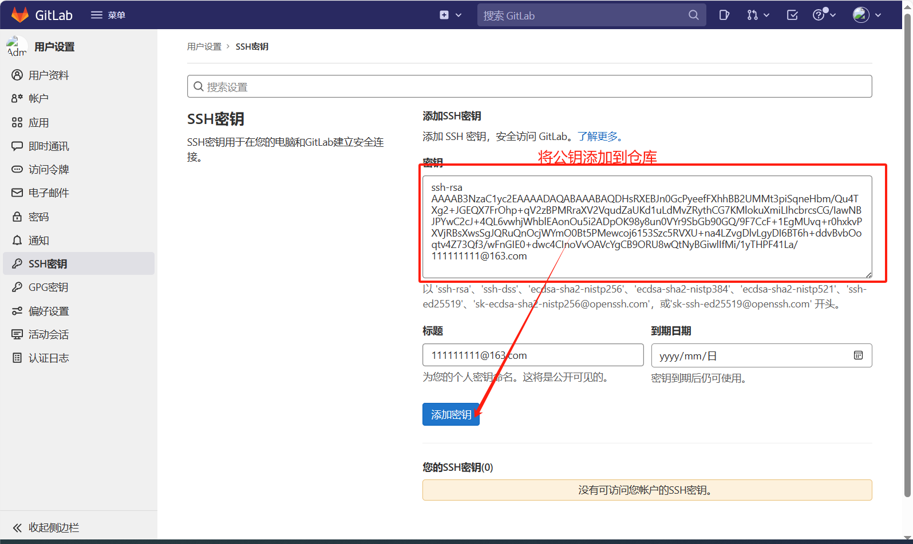
5.7 创建仓库
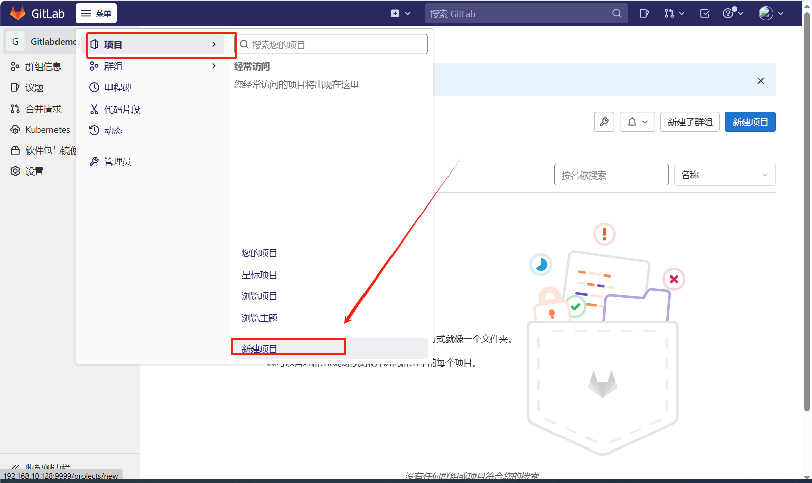
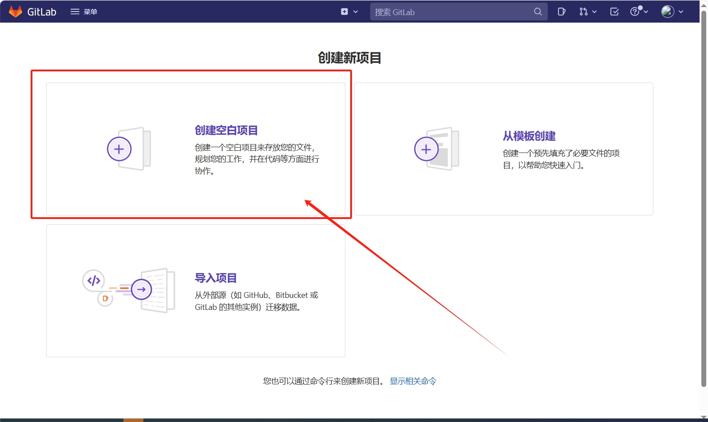
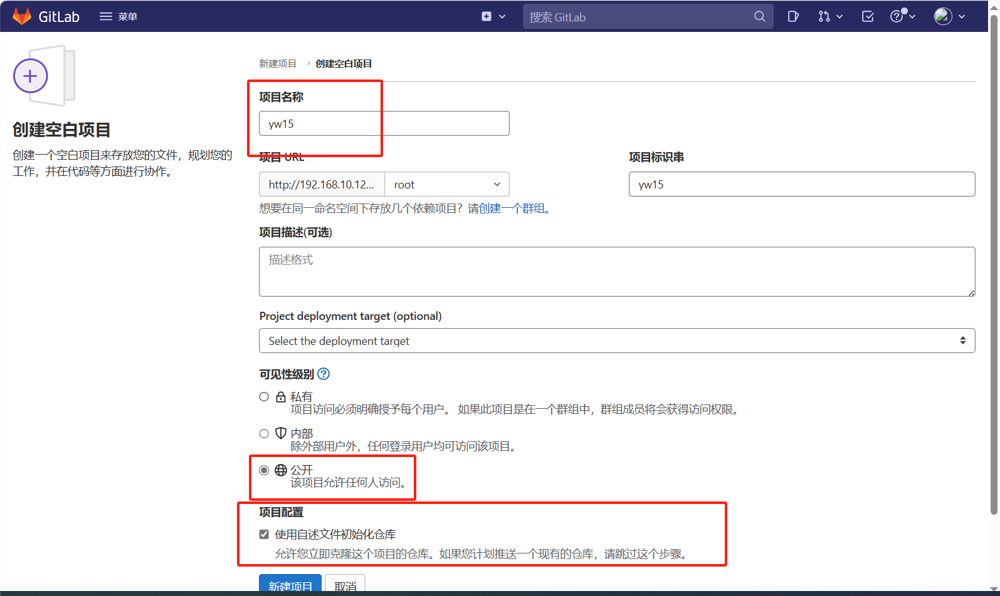
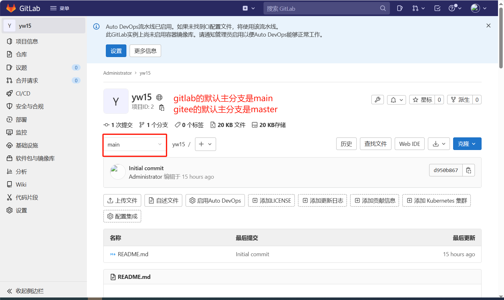
5.8 添加远程仓库到本地
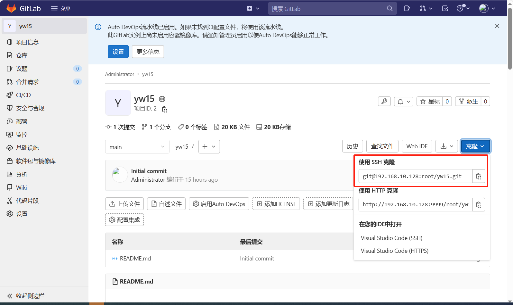
[root@localhost opt]# mkdir gitlabdemo
[root@localhost opt]# cd gitlabdemo/
[root@localhost gitlabdemo]# git init
已初始化空的 Git 仓库于 /opt/gitlabdemo/.git/
[root@localhost gitlabdemo]# git remote add origin git@192.168.10.128:root/yw15.git
[root@localhost gitlabdemo]# git remote -v
origin git@192.168.10.128:root/yw15.git (fetch)
origin git@192.168.10.128:root/yw15.git (push)
#再未拉取是，本地重新不到分支
[root@localhost gitlabdemo]# git branch
#从远程仓库拉取数据
[root@localhost gitlabdemo]# git pull origin main
The authenticity of host '192.168.10.128 (192.168.10.128)' can't be established.
ECDSA key fingerprint is SHA256:sjJOeNbp8WBhber0kZiIR2eCNu7jxEuSwh4NGBRQ/pw.
ECDSA key fingerprint is MD5:0b:20:fd:a3:a3:c9:25:ab:2e:41:bf:6a:71:3b:b4:3b.
Are you sure you want to continue connecting (yes/no)? yes
Warning: Permanently added '192.168.10.128' (ECDSA) to the list of known hosts.
remote: Enumerating objects: 3, done.
remote: Counting objects: 100% (3/3), done.
remote: Compressing objects: 100% (2/2), done.
remote: Total 3 (delta 0), reused 0 (delta 0), pack-reused 0
展开对象中: 100% (3/3), 完成.
来自 192.168.10.128:root/yw15
* branch main -> FETCH_HEAD
* [新分支] main -> origin/main
#拉取成功之后，会默认生成一个新的分支master
[root@localhost gitlabdemo]# git branch
* master
#切换到远程仓库分支后查询时两个分支
[root@localhost gitlabdemo]# git checkout main
分支 'main' 设置为跟踪来自 'origin' 的远程分支 'main'。
切换到一个新分支 'main'
[root@localhost gitlabdemo]# git branch
* main
master
[root@localhost gitlabdemo]# echo "这个是测试文件八零八零八零" >> test1.txt
[root@localhost gitlabdemo]# git add test1.txt
[root@localhost gitlabdemo]# git commit -m "测试文件"
[main e567b6f] 测试文件
1 file changed, 1 insertion(+)
create mode 100644 test1.txt
[root@localhost gitlabdemo]# git push
枚举对象: 4, 完成.
对象计数中: 100% (4/4), 完成.
Delta compression using up to 4 threads.
压缩对象中: 100% (2/2), 完成.
写入对象中: 100% (3/3), 313 bytes | 313.00 KiB/s, 完成.
Total 3 (delta 0), reused 0 (delta 0)
To 192.168.10.128:root/yw15.git
d950b86..e567b6f main -> main
[root@localhost opt]# git clone -b main git@192.168.10.128:root/yw15.git
正克隆到 'yw15'...
remote: Enumerating objects: 6, done.
remote: Counting objects: 100% (6/6), done.
remote: Compressing objects: 100% (4/4), done.
remote: Total 6 (delta 0), reused 0 (delta 0), pack-reused 0
接收对象中: 100% (6/6), 完成.
六、上传猫眼项目
6.1 上传猫眼项目到gitee仓库
[root@localhost gitdemo]# ls
cateye-pro hello README.en.md README.md w.txt
[root@localhost gitdemo]# git add cateye-pro
[root@localhost gitdemo]# git status #查询状态时，会发现有很多绿的文件，这些都是.java文件
[root@localhost gitdemo]# git commit -m "猫眼项目1.0"
#推送到gitee仓库
[root@localhost gitdemo]# git push --set-upstream origin master
枚举对象: 142, 完成.
对象计数中: 100% (142/142), 完成.
Delta compression using up to 4 threads.
压缩对象中: 100% (131/131), 完成.
写入对象中: 100% (141/141), 52.69 KiB | 4.39 MiB/s, 完成.
Total 141 (delta 32), reused 0 (delta 0)
remote: Resolving deltas: 100% (32/32), completed with 1 local object.
remote: Powered by GITEE.COM [GNK-6.4]
To gitee.com:wei-wen-hui/yw15.git
5f39f1a..e7a238e master -> master
分支 'master' 设置为跟踪来自 'origin' 的远程分支 'master'。
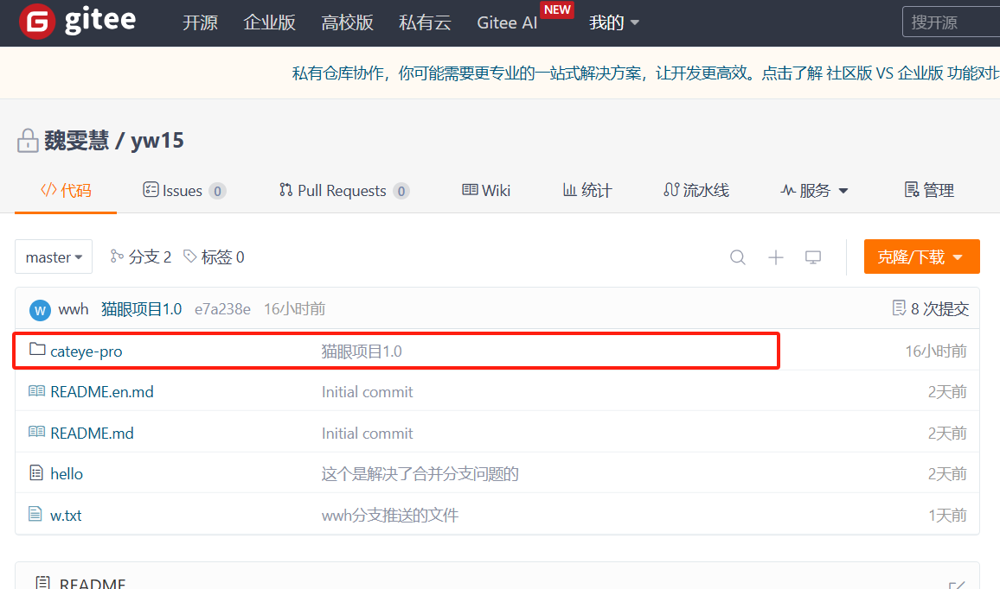
[root@localhost gitdemo]# cp -r cateye-pro /opt/gitlabdemo/
[root@localhost gitdemo]# cd /opt/gitlabdemo/
[root@localhost gitlabdemo]# git add . && git commit -m "猫眼项目1.0" && git push --set-upstream origin main
七、部署JDK环境
[root@localhost opt]# tar zxf jdk-11.0.14_linux-x64_bin.tar.gz -C /usr/local/
[root@localhost opt]# ln -s /usr/local/jdk-11.0.14 /jdk
[root@localhost opt]# rm -rf /usr/bin/java
[root@localhost opt]# ln -s /jdk/bin/java /usr/bin/java
[root@localhost opt]# vim /etc/profile
export JAVA_HOME=/jdk
[root@localhost opt]# source /etc/profile
[root@localhost opt]# java --version
java 11.0.14 2022-01-18 LTS
Java(TM) SE Runtime Environment 18.9 (build 11.0.14+8-LTS-263)
Java HotSpot(TM) 64-Bit Server VM 18.9 (build 11.0.14+8-LTS-263, mixed mode)
八、Maven安装
[root@localhost opt]# tar zxf apache-maven-3.9.3-bin.tar.gz
[root@localhost opt]# mv apache-maven-3.9.3 /usr/local/maven
export GIT_HOME=$PATH:/usr/local/git
export PATH=$PATH:$GIT_HOME/bin
export JAVA_HOME=/jdk
export MAVEN_HOME=/usr/local/maven
export PATH=$PATH:$GIT_HOME/bin:$JAVA_HOME/bin:$MAVEN_HOME/bin
[root@localhost opt]# source /etc/profile
8.2 配置MAVEN
[root@localhost opt]# cd /usr/local/maven/
[root@localhost maven]# mkdir repo
[root@localhost maven]# cp conf/settings.xml{,.bak}
[root@localhost maven]# vim conf/settings.xml
#55行添加，去指明jar存放仓库
<localRepository>/usr/local/maven/repo</localRepository>
#在160行左右添加下列内容
#主要作用就是指明jar包仓库
#默认时指向国外仓库，改为指向阿里云仓库
<mirror>
<id>aliyun-maven</id>
<mirrorOf>*</mirrorOf>
<name>阿里云的maven仓库</name>
<url>https://maven.aliyun.com/repository/public</url>
</mirror>
8.3 验证maven
[root@localhost maven]# mvn --version
Apache Maven 3.9.3 (21122926829f1ead511c958d89bd2f672198ae9f)
Maven home: /usr/local/maven
Java version: 11.0.14, vendor: Oracle Corporation, runtime: /usr/local/jdk-11.0.14
Default locale: zh_CN, platform encoding: UTF-8
OS name: "linux", version: "3.10.0-1160.el7.x86_64", arch: "amd64", family: "unix"
九 、部署猫眼项目
9.1 获取项目
#创建仓库
[root@localhost opt]# mkdir gitdemo
[root@localhost opt]# cd gitdemo/
#做初始化
[root@localhost gitdemo]# git init
已初始化空的 Git 仓库于 /opt/gitdemo/.git/
#连接远程仓库
[root@localhost gitdemo]# git remote add origin git@gitee.com:wei-wen-hui/yw15.git
[root@localhost gitdemo]# git remote -v
origin git@gitee.com:wei-wen-hui/yw15.git (fetch)
origin git@gitee.com:wei-wen-hui/yw15.git (push)
#拉取源码
[root@localhost gitdemo]# git pull origin master
remote: Enumerating objects: 162, done.
remote: Counting objects: 100% (162/162), done.
remote: Compressing objects: 100% (115/115), done.
remote: Total 162 (delta 37), reused 142 (delta 32), pack-reused 0
接收对象中: 100% (162/162), 56.26 KiB | 1.31 MiB/s, 完成.
处理 delta 中: 100% (37/37), 完成.
来自 gitee.com:wei-wen-hui/yw15
* branch master -> FETCH_HEAD
* [新分支] master -> origin/master
[root@localhost gitdemo]# ls
cateye-pro hello README.en.md README.md w.txt
- 上传项目的配置文件application-dev.yml文件到/opt/gitdemo目录下
[root@localhost gitdemo]# pwd
/opt/gitdemo
[root@localhost gitdemo]# ls
application-dev.yml cateye-pro hello README.en.md README.md w.txt
[root@localhost gitdemo]# vim application-dev.yml
server:
port: 8888
commIP: 192.168.10.137
9.2 调试中间件服务器
[root@localhost ~]# vim /usr/local/kafka/config/server.properties
listeners=PLAINTEXT://192.168.10.137:9092
zookeeper.connect=192.168.10.137:2181
[root@localhost ~]# cd /opt/shell/
[root@localhost shell]# ./sysgo.sh
-
检查进程
-
3306 mysql
-
6379 redis
-
9200 9300 elastic
-
9092 kafka
[root@localhost shell]# netstat -anpt | grep 3306
tcp6 0 0 :::33060 :::* LISTEN 1046/mysqld
tcp6 0 0 :::3306 :::* LISTEN 1046/mysqld
[root@localhost shell]# netstat -anpt | grep 6379
tcp 0 0 0.0.0.0:6379 0.0.0.0:* LISTEN 8827/redis-server 0
tcp6 0 0 ::1:6379 :::* LISTEN 8827/redis-server 0
[root@localhost shell]# netstat -anpt | grep 9200
tcp6 0 0 :::9200 :::* LISTEN 8749/java
[root@localhost shell]# netstat -anpt | grep 9300
tcp6 0 0 :::9300 :::* LISTEN 8749/java
[root@localhost shell]# netstat -anpt | grep 9092
tcp6 0 0 192.168.10.137:9092 :::* LISTEN 9251/java
[root@localhost ~]# getenforce #查询内核状态
Enforcing
[root@localhost ~]# setenforce 0 #临时关闭
SELINUX=disabled
[root@localhost ~]# vim /etc/selinux/config
SELINUX=disabled
[root@localhost ~]# systemctl stop firewalld
[root@localhost ~]# systemctl disable firewalld
[root@localhost ~]# netstat -anpt | grep 8888
tcp6 0 0 :::8888 :::* LISTEN 9254/java
[root@localhost ~]# kill 9254
[root@localhost ~]# netstat -anpt | grep 8888
tcp6 0 0 ::1:39882 ::1:8888 TIME_WAIT -
十、Maven的使用
10.1 maven打包
-
打包过程很长、等待即可
-
中间如果有短暂卡顿正常，等待即可
-
不要求网络很快，网络尽量稳定
[root@localhost cateye-pro]# pwd
/opt/gitdemo/cateye-pro
[root@localhost cateye-pro]# mvn install package
打包完成后当前目录下会出现一个jar包
[root@localhost cateye-pro]# pwd
/opt/gitdemo/cateye-pro
[root@localhost cateye-pro]# ls
pom.xml src target
10.2 启动jar包
[root@localhost cateye-pro]# cd target/
[root@localhost target]# nohup javpa -jar Cateye-pro.jar > /opt/cateye.log 2>&1 --spring.config.location=/opt/gitdemo/application-dev.yml &
[1] 61787
10.3 查询端口号
[root@localhost target]# netstat -anpt | grep 8888
tcp6 0 0 :::8888 :::* LISTEN 61787/java
10.4 验证结果
10.5 伪集群
#开启第一个猫眼程序
[root@localhost target]# cd /opt/gitdemo/cateye-pro/target
[root@localhost target]#
nohup java -jar Cateye-pro.jar > /opt/cateye.log 2>&1 --spring.config.location=/opt/gitdemo/application-dev.yml &
[root@localhost target]# netstat -anpt | grep 8888
tcp6 0 0 :::8888 :::* LISTEN 16212/java
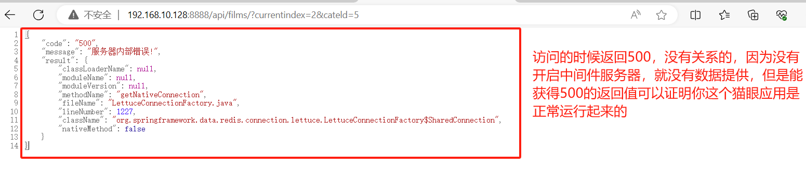
#### 在一个集群上开启第二个猫眼程序，端口号和第一个猫眼不一样
#修改配置文件，修改服务端口号
[root@localhost target]# vim /opt/gitdemo/application-dev.yml
server:
port: 8889
[root@localhost target]# nohup java -jar Cateye-pro.jar > /opt/cateye.log 2>&1 --spring.config.location=/opt/gitdemo/application-dev.yml --httpPort=8889 &
[2] 21471
[root@localhost target]# netstat -anpt | grep 8889
tcp6 0 0 :::8889 :::* LISTEN 21471/java